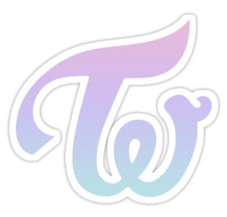
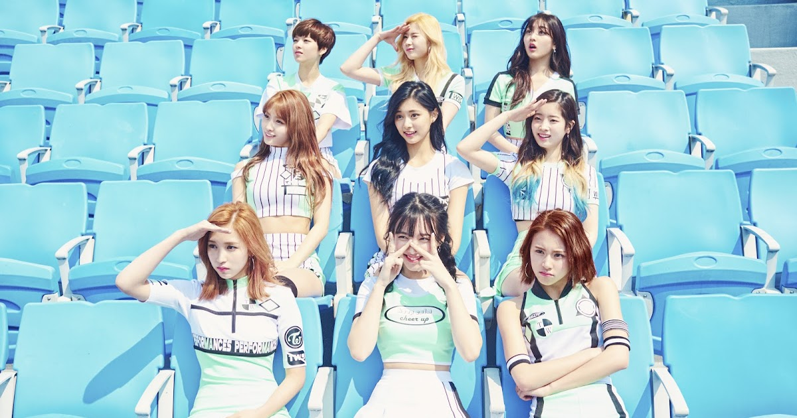

On November 4, 2015 - Twice released their official fandom name through their official instagram account. The girls posted a photo above to Instagram as well as the message, "A lot of fans liked 'Once,' 'Once and TWICE.' Once then TWICE. They seem to go together. If you love us even once, we'll repay you with TWICE our love. It's difficult to connect with people, and getting people to love is the most difficult of all. We'll work hard so that you can look at us once, and fall in love with us TWICE. Be with us until the end. We love you. <3."
"The group will touch people's hearts twice, once through the ears, and once again through the eyes."
–Park Jin Young, Meaning of the group
2015
The group debuted on October 20, 2015, with the mini-album The Story Begins. Their official lightstick is called "Candy Bong". The official Twice logo that connects T and W was designed by member Chaeyoung and is put in all of TWICE's official activities. On the official SNS accounts and YouTube channel, the logo is also updated to match the concept color on every comeback and used as a profile picture.
On October 7, 2015, JYP Entertainment launched the band's official website and announced via SNS that the group would debut with the mini-album The Story Begins and title track "Like OOH-AHH". The track was described as a 'color pop' dance track with elements of hip-hop, rock, and R&B. The composition team included Black Eyed Pilseung, known for composing successful releases such as Miss A's "Only You." On October 20, the album and the song's music video were released online and through the Naver V App. The group held a live showcase the same day, where they performed "Like OOH-AHH" along with dance tracks "I think I'm Crazy" and "Do It Again."
The music video hit 50 million views within five months of their debut and became the most-viewed debut music video for any K-pop group. By December, Twice had signed ten CF contracts totaling earnings of KRW1.8 billion. It is the most for any rookie girl group after a month since debut. On December 27, the band performed a remix version of their single "Like OOH-AHH" at SBS Gayo Daejeon, Twice's first-ever attendance on a year-end music program.
2016

Twice's second mini-album, Page Two, was released on April 25, 2016. The album includes title track
"Cheer Up", a remake of Park Ji-yoon's "Precious Love", and "I'm Gonna Be a Star", which served as the theme song for Sixteen. The group held their comeback showcase the same day at the Yes24 Live Hall located in Seoul, South Korea. The music video of the title track hit 10 million views on YouTube within five days. Twice won their first music program award on May 5, 2016, on M! Countdown, exactly one year after the initial airing of Sixteen. This was soon followed by wins on Music Bank and Inkigayo.
On August 16, 2016, it was reported that Twice's second mini-album Page Two had sold over 150,000 copies, making it the first girl group having a sales record of more than 100,000 units this year.
On September 23, 2016, Twice released their two official colours, namely Apricot (Pantone 712 C) and Neon Magenta (Pantone 812 C), which signify the group and their fan club called "Once". Five days later, JYP Entertainment announced that the group is preparing for a late October comeback with a new album and another title track by Black Eyed Pilseung, though the final schedule has not been set. On October 10, the agency released a time table for their third extended play, titled TWICEcoaster: LANE 1, through their official homepage and SNS, which shows Twice's promotion schedule beginning October 10 until the release of their album on the 24th. On October 19, Twice revealed their official light with their official colours called "Candy Bong", which is inspired by song "Candy Boy" from their first mini album. In celebration of Twice's first anniversary since debut, the group unveiled their new song "One in a Million", through a live broadcast on Naver V Live on October 20 at 22:30 KST.
On October 24, 2016, TWICEcoaster: LANE 1 and the music video of the laid-back but light and cheerful pop dance song "TT" was released online. Twice held their showcase the same day, where they performed "One in a Million", "Jelly Jelly" and "TT" for the first time.
On November 11, 2016, the music video for "Like OOH-AHH" hit 100 million views on YouTube, which makes Twice became the fourth K-pop girl group to reach 100 million views, as well as the first debut music video for any K-pop group to reach this milestone. The music video for "Cheer Up" followed six days later.
On December 5, 2016, it was announced through their official Twitter that the group would be releasing a Christmas edition of TWICEcoaster: LANE 1. It was released on December 19 with the same track listing.
2017
On January 3, 2017, the music video for "TT" hit 100 million views, becoming the fastest K-pop group music video to do so and breaking Twice's own record previously set by "Cheer Up".
On January 10, 2017, JYP Entertainment announced Twice's first solo concert within just a year and four months of debuting in October 2015. The three-day concert titled Twice 1st Tour: Twiceland The Opening will be held on February 17–19 at the SK Olympic Handball Stadium, and is the first stop of their world tour.
On January 18, the agency also announced that Twice will release a special album in February after the Korean leg of the concert tour. The album is reportedly another reissue of Twicecoaster: Lane 1.
Lane 2 and its lead single, "Knock Knock", were both released on February 20, 2017. After its release, it was reported that the reissue sold more than 310,000 copies in pre-orders within a week.